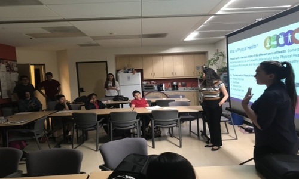
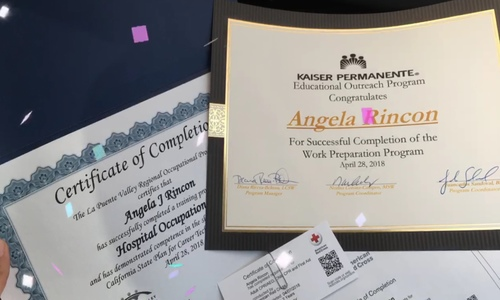
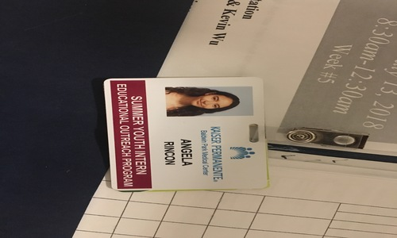
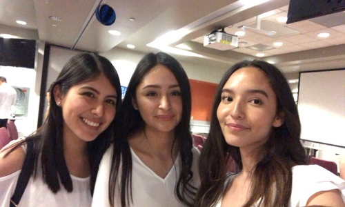
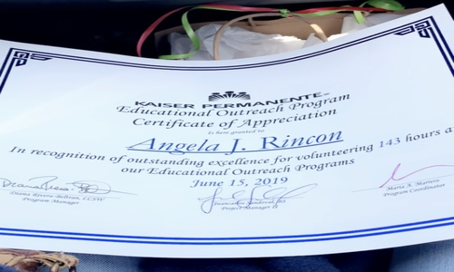
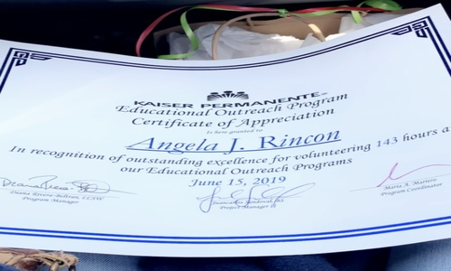
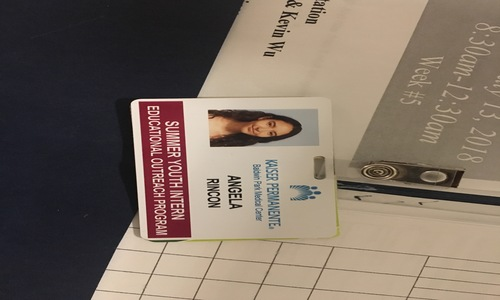
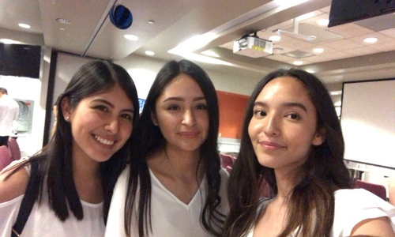
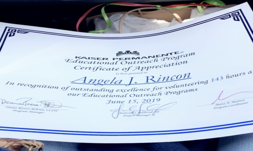

Angela Rincon
Hello, my name is Angela Rincon and I am a psychology major at the University of California, Riverside.
I am a first year at UCR. Before college however, I attended Northview High School in Covina, California. I graduated from Northview High School with honors. I was involved on campus; such as Key Club and AVID Club, in the AVID curriculum all throughout high school, and maintained high grades and honor roll as well. I was in AVID since 7th grade and I learned how to be organized in and outside of a school environment, how to succeed in college, and especially being a first generation student, it taught me how to apply, deadlines, exams, and everything you needed to apply and prepare for college. I was also involved in my community, volunteering with several organizations and at several events. I was able to volunteer at the Rose Parade float set ups, Corey’s Kitchen, and the Covina Christmas Parade through Key Club. Because of my service from being in the club, I learned how much I enjoyed volunteering. I was able to volunteer for Kaiser’s Educational Outreach Office in Baldwin Park where I did 6 hours a week as an after-school helper for kids and math tutor for kids as well. I had so much exposure to kids during this time and again I realized that not only do I enjoy helping others, but more so children and from here I was able to develop what I wanted to do for my career in the future. I decided to major in psychology when I began applying to colleges and I started a plan for myself: To get my undergraduate in Psychology, attend graduate school for Developmental or Clinical Psychology, and finally become a Psychologist. Once accepted into UCR, I immediately felt that it was the university for me. I loved the diversity, the distance from home, the psychology program, and the overall environment of the campus. I fully believed and still believe that UCR is the best school to fulfill my dreams of becoming a psychologist and this was further proved to me after my first quarter here. I took Psych 001 my first quarter, my first psychology course ever, and I fell even more in love with the subject than I ever thought I could. My professor was the best professor I’ve had here yet and the topics discussed were things I never knew I would enjoy so much in psychology. For example, I have never been a biology or anatomy fan, but in this class when we went over the biological and neuroscience section, I thrived and felt it was the best section throughout the whole course. I got a nearly perfect score on my midterm, which was again shocking since I had never liked these subjects. Being here has already in just one quarter taught me more and about myself and my interests and has expanded my viewpoint drastically. I am fully committed to university and I plan to continue to try my hardest and find my place in psychology more and more with each course I take.
I am excited for my future in psychology, hopefully working in a lab and getting internships as soon as I can.
Experience
Summer Youth Intern
• Worked with EOP
• Leader of a group for EOP's Summer Program for kids
• Acted as a chaperone for the kids on trips
Work Preparation Intern
• Learned how to succeed in the medical field workplace, every session has a presentation from a health worker
• CPR and First Aid trained and certified
Math Tutor
• Every Friday from 3-6
• Tutored 4th-5th grade kids on math, following a cirriculum
• Assigned 3 kids, 1 for each section (1 hour each section)
• Learned best ways on how to teach kids and more experience with kids
Education
UC Riverside
Portfolio




 

 
